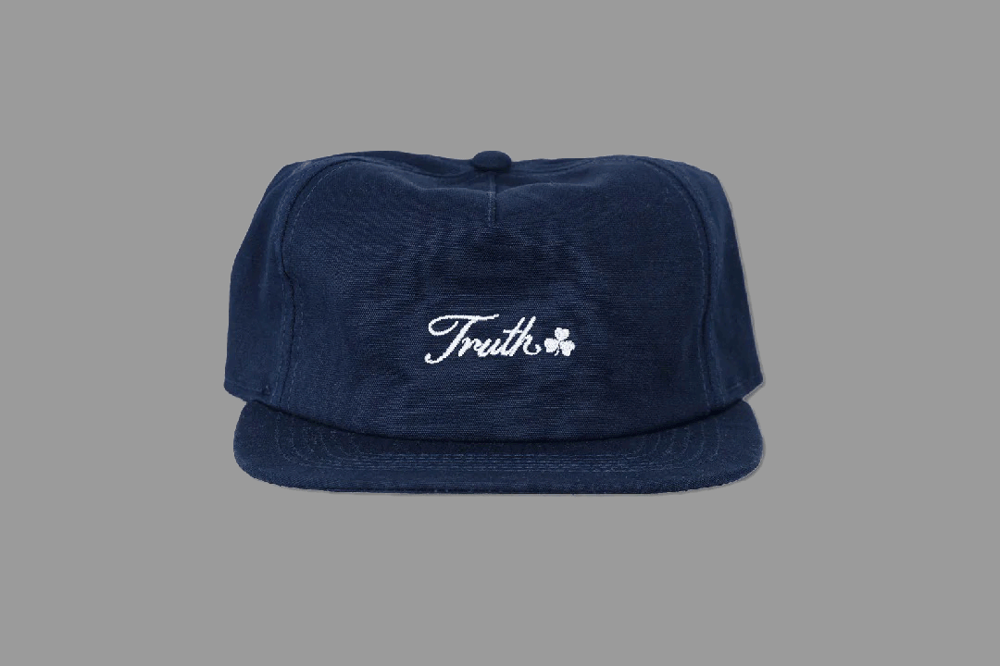
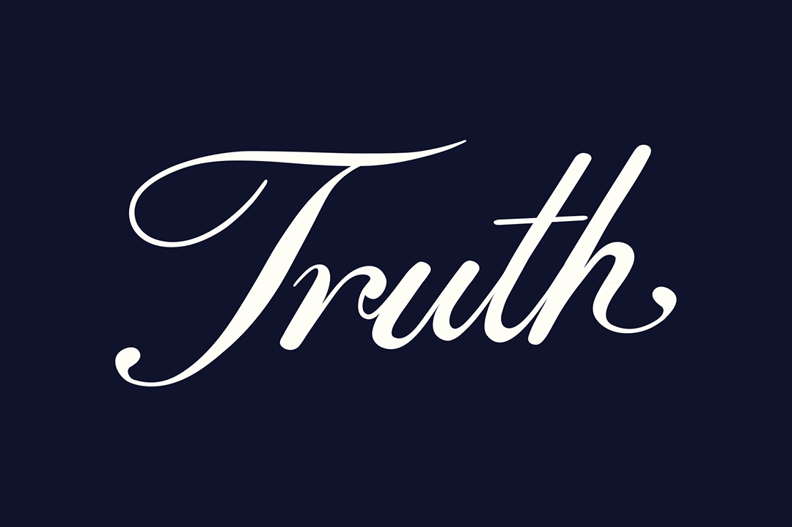

Amalia Popescu
About
Truth Apparel Work
Nov 24 - Feb 25
This is a typeface inspired by the South London Gallery Fire Station. The building was originally designed to house the frefighters and their families on the top floors, and to store the equipment on the bottom floor. This typeface artfully captures the juxtaposition of the laborious lower level and the tranquil upper floors. Beyond its typographic significance, UpperRoom serves as a personal homage to the building.
next project >

